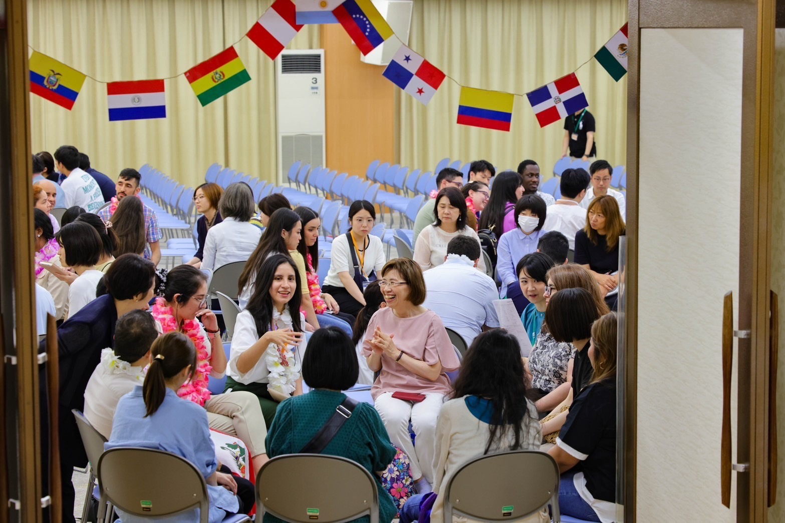

사제의 대도, '특구 마치다'에 오신 것을
환영합니다！
ようこそ！師弟の大道、特区町田へ！
한국SGI교류교환회 | 2026.6.14
韓国SGI交流交歓会 | 2026.6.14
Scroll
환영 歓迎
교류와 대화 交流と対話

마음을 나누는 시간 心を交わす時間
환영 합창 歓迎合唱
감동의 체험 발표 感動の体験発表
또 만나요 またお会いしましょう
감사의 마음을 담아 感謝の心を込めて